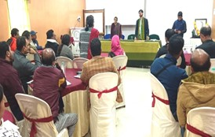

Networking and Advocacy
From its inception, networking has been one of the most priority activities of VHAT to facilitate linkages with other organizations in other sectors including the government agencies. Networking is also an important means to disseminate knowledge and information. The networking feature of VHAT:-
- Within the state of Tripura -
- Federation with CSOs through membership : The membership of VHAT creates opportunity for sharing, co-operating, exchanging information, experiences and activities in the areas of functioning.
-
Support Services for member organizations :
- Creating awareness about the government policies.
- Guidance for project formulation, monitoring and evaluation of the developmental projects in the grass-root.
- Information dissemination for availability of fund from various sources.
- Advise to overcome problems of registration, accounting and report preparation.
- Capacity Building through trainings to CSOs, members of SHGs & CBOs.
-
Anti-Trafficking Activities:
To combat human trafficking and violence against children & women VHAT closely works with the member organizations to sensitize law enforcement agency and allied systems. Hence, law enforcement agencies, administration, Child Welfare Committees, non-government organizations, local institutes and Panchayats are involved in sharing information, rescue, restoration and cross border repatriation.
-
Networking with Local Government Departments :
VHAT gives priority in networking with government departments and advocacy for proper orientation of the government policy for giving maximum benefit to the under privileged as well as underserved population.
- Networking outside Tripura
- VHAT is federated in national level with Voluntary Health Association of India (VHAI), New Delhi.
- VHAT is networking partner of Responsible Coalition for Resilient Communities (RCRC) & Community Action Collab(CAC) which provided us the opportunity to serve the communities in need.
- Give India Network connecting VHAT with different individuals nationally and internationally to know about VHAT activities and supporting the programs to serve the under privileged section of the society.
- VHAT is a part of ECHO (Extension for Community Healthcare Outcomes) India network.
- VHAT is a member of Cerebral Palsy Sports Federation of India(CPSFI)
- Advocacy
Policy level advocacy through the network is a priority activity of VHAT. Since its inception in 1988 as state level network of NGOs and CBOs, it had conducted many advocacy campaigns like protection of biodiversity and promotion of sustainable development, implementation of PCPNDT Act for the prohibition of sex selection, before or after conception, and for regulation of pre- natal diagnostic techniques, advocacy for Inclusive Education to include children with disabilities in the main education system with empowerment of the teachers through training and during COVID pandemic for COVID vaccination.
Workshop on Writing Proposal for Fund Raising for NGOs of Tripura on 17th January 2024
This was an interactive event with the member NGOs of VHAT and a few other NGOs of Tripura. Mr. Morry Rao Hermón, University of California, Berkeley, was the facilitator. A total of 27 NGO representatives participated in this workshop. |
||
|---|---|---|
| Workshop Details |

During the Workshop on 17th January, 2024 |

Facilitator Mr. Morry Rao Hermón |